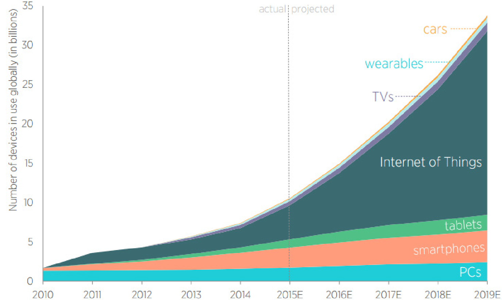
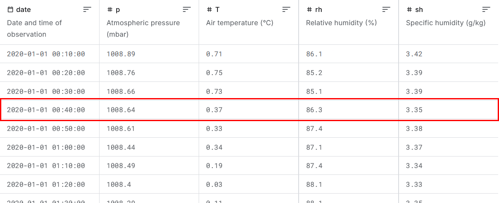
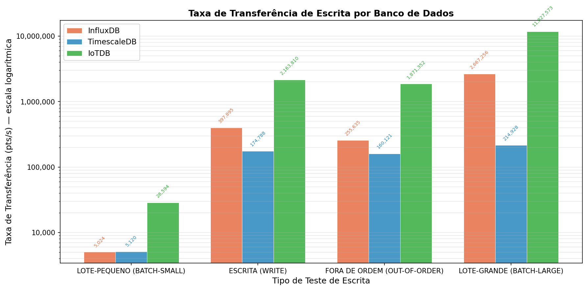
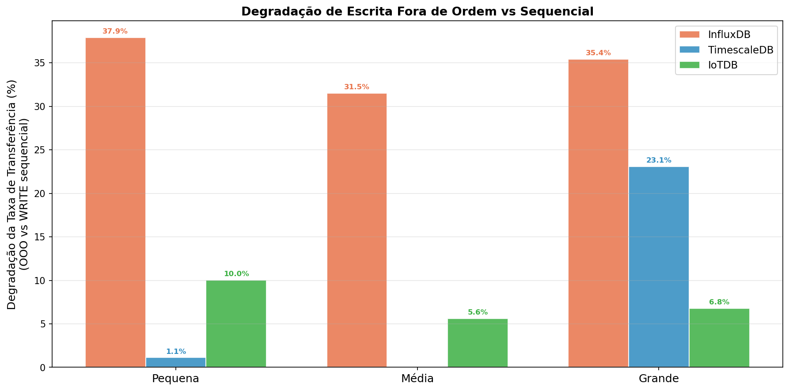
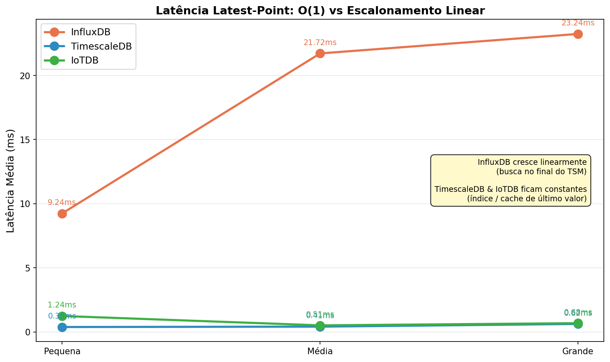
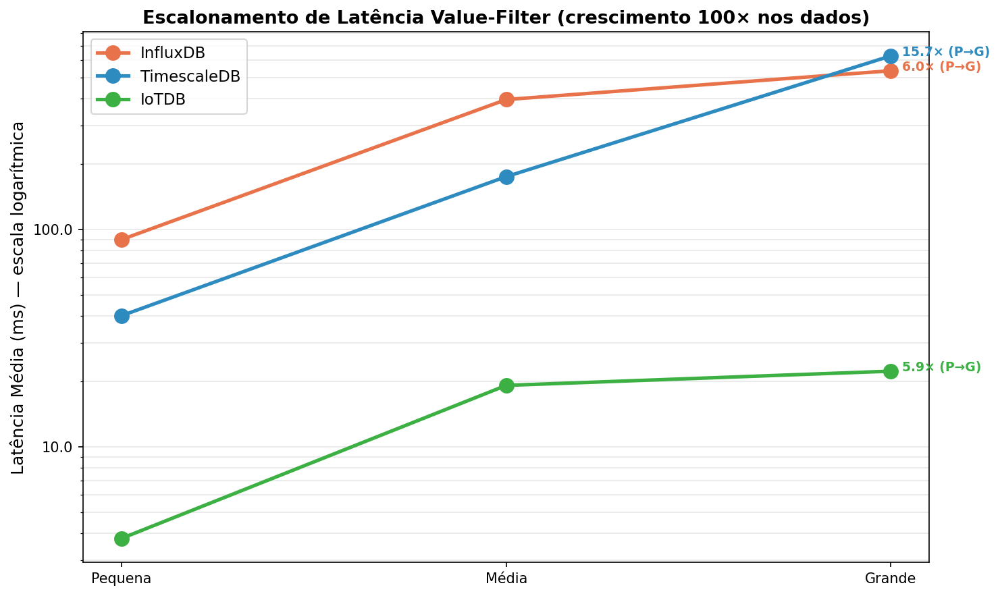
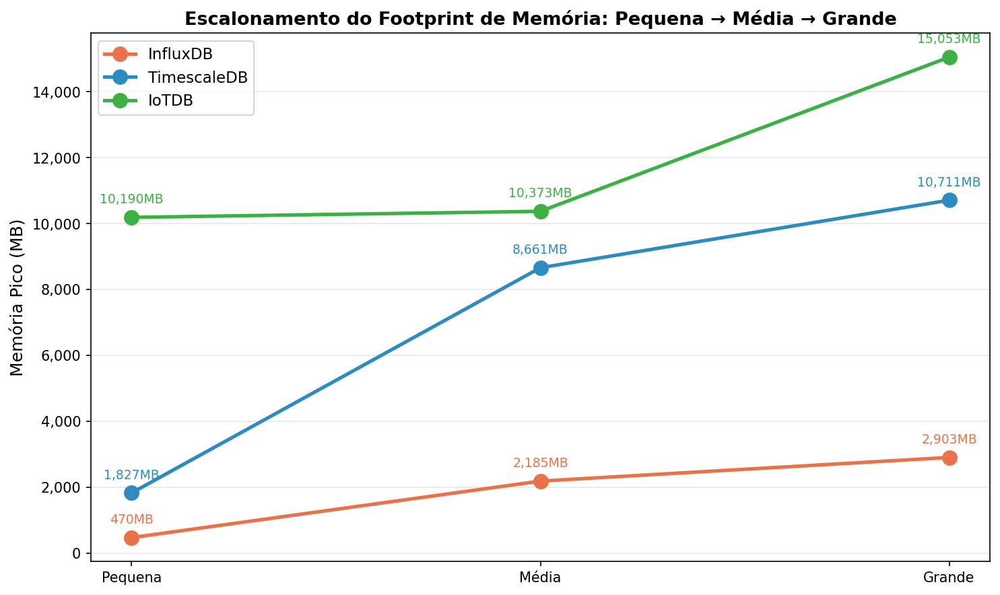
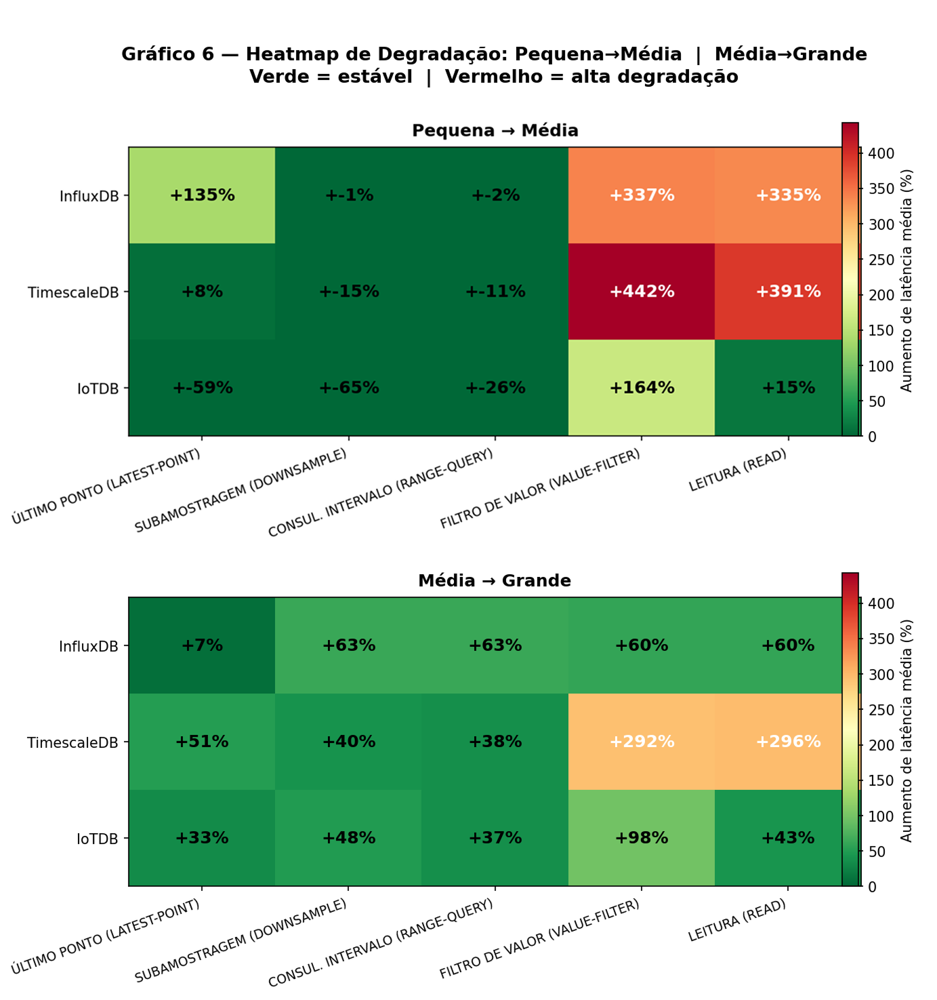
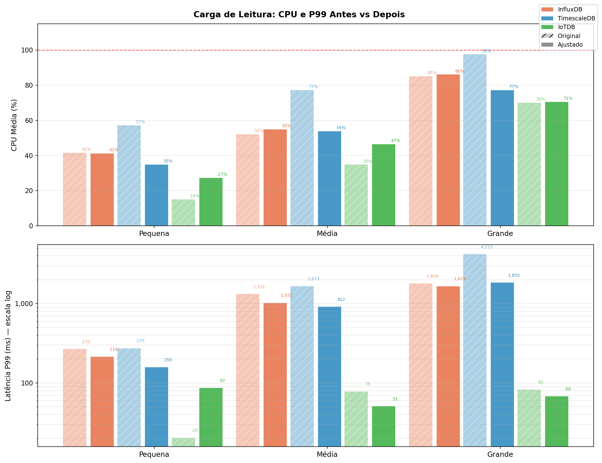

Defesa de TCC 2 · 2026
Uma Análise Comparativa Reprodutível de Apache IoTDB, InfluxDB e
TimescaleDB para Cargas de Trabalho IoT
Luiz Fernando Klein
Ciência da Computação · UFFS · Chapecó, 2026
Orientador: Prof. Dr. Geomar André Schreiner
Agenda
- 1Introdução
- 2Fundamentação Teórica
- 3Trabalhos Relacionados
- 4Metodologia
- 5Experimentos
- 6Conclusão
Introdução
Explosão IoT
500 bi
Dispositivos conectados projetados até 2030 (Cisco)
- 90% dos veículos conectados em 2030
- 15 dispositivos por pessoa (Telefonica)
- Saúde inteligente, cidades inteligentes e IoT industrial
- Os dados que antes eram coletados a cada 10 minutos agora são coletados a cada segundo.

Introdução
Dados Temporais e Limitações do Modelo Relacional
Séries temporais
Sequências de valores indexados por tempo, frequentemente com
precisão de milissegundos.
Limitações dos SGBDs relacionais
- Indexação ineficiente para padrões de acesso temporal
- Alto custo de armazenamento histórico de longo prazo
- Sem funções temporais nativas (retenção, subamostragem, compressão)
Resposta: BDSTs
Bancos de Dados de Séries Temporais são projetados desde a
concepção para dados temporais


Introdução
Os Três Bancos Avaliados
| Banco | Arquitetura central | Origem |
|---|---|---|
| Apache IoTDB 1.3 | TsFile colunar + Thrift RPC | IoT industrial |
| InfluxDB 2.7 | TSM (Time-Structured Merge Tree) + HTTP | Padrão de referência na literatura |
| TimescaleDB (PG 15) | Hipertabelas sobre PostgreSQL + WAL | SQL completo + ecossistema relacional |
InfluxDB
4/6
Estudos revisados
IoTDB
2/6
Estudos mais recentes (2023)
TimescaleDB
4/6
Estudos revisados
Cada banco representa uma abordagem arquitetural distinta para o
mesmo problema.
Introdução
Lacuna de Reprodutibilidade
1/6
Estudos totalmente reprodutíveis
(Pereira 2023)
| Reprodutibilidade | Estudos |
|---|---|
| Total | 1 |
| Parcial | 2 |
| Nenhuma | 3 |
Consequências
- Resultados não podem ser validados de forma independente
- Impossível comparar descobertas entre estudos
- Experimentos não se adaptam a novo hardware ou versões
Introdução
Escopo do Estudo
9
Tipos de carga de trabalho
4 escrita · 5 leitura
3
Escalas de volume
Variação de ~100 vezes entre pequena e grande
27
Execuções totais
Isolamento sequencial de contêineres
Isolamento: de conveniência a pré-requisito
Descoberto experimentalmente: contêineres concorrentes produziram
conclusões enganosas. O isolamento sequencial foi adotado como
pré-requisito para resultados válidos.
Fundamentação Teórica
Bancos de Dados e Sistemas Distribuídos
Bancos de Dados
- SGBD: armazenamento e recuperação eficientes de grandes coleções de dados (Ramakrishnan 2003)
- Modelo relacional: tabelas, esquemas, integridade referencial e SQL
- Independência de dados, acesso concorrente seguro e recuperação de falhas
Bancos de Dados Distribuídos
- Múltiplos nós com bancos locais e esquema comum (Özsu 2011)
- Vantagem: localidade de dados e paralelismo entre nós
- Desafio: consistência da replicação vs. desempenho
Fundamentação Teórica
Arquiteturas dos Três Bancos
| Banco | Escrita | Leitura | Durabilidade |
|---|---|---|---|
| IoTDB | Memtable JVM + flush assíncrono para TsFile colunar via Thrift RPC | Estatísticas min/max por bloco: eliminação de blocos | Diferida |
| InfluxDB | Cache TSM em memória + compactação para arquivos imutáveis via HTTP | TSI; sem atalho para último valor | Diferida (cache TSM) |
| TimescaleDB | TCP + SQL + WAL + MVCC via JDBC sobre PostgreSQL | Eliminação de blocos de hipertabela por tempo; B-tree/BRIN | Síncrona (WAL antes do ACK) |
Trade-off central
Durabilidade diferida = maior vazão
· WAL síncrono = garantia
forte, menor vazão
Fundamentação Teórica
Benchmarks: Princípios e Armadilhas
Um bom benchmark deve ter:
portabilidade, clareza e escalabilidade
(Ramakrishnan 2003)
5 armadilhas recorrentes (Shapira 2016)
- 1Comparar configurações que diferem em múltiplos parâmetros simultaneamente
- 2Testar em escala insuficiente e extrapolar os resultados
- 3Aceitar resultados suspeitos sem questionar a origem
- 4Usar cargas de trabalho artificiais desconectadas do uso real
- 5Comunicar resultados de forma incompleta
Trabalhos Relacionados
Processo de Pesquisa
23
Resultados lidos
→
7
Selecionados
Keywords (Google Scholar):
"data streaming" · "timeseries" · "timeseries databases"
ordenados por citações
"data streaming" · "timeseries" · "timeseries databases"
ordenados por citações
3 categorias de análise
Funcionalidade
Petre 2019: modelo de maturidade de 6 BDSTs, 18 atributos
Desempenho
6 benchmarks controlados ou comparações em cenários reais
Lima 2024 · Shah 2022 · Naqvi 2017 ·
Grzesik 2020 · Pereira 2023 · Wang 2023
Comparativa
Síntese dos 6 estudos de desempenho na tabela a seguir
Trabalhos Relacionados
Tabela Comparativa dos Estudos
| Autor | Ano | Reprodutibilidade | Ferramentas | Líder |
|---|---|---|---|---|
| Lima | 2024 | Parcial | Apache JMeter | InfluxDB |
| Pereira | 2023 | Total | MulletBench, Ansible, Docker | IoTDB |
| Wang | 2023 | Parcial | TSBS | IoTDB |
| Shah | 2022 | Nenhuma | Python timeseries-generator | InfluxDB |
| Grzesik | 2020 | Nenhuma | Manual | PostgreSQL |
| Naqvi | 2017 | Nenhuma | Telegraf, Kapacitor | InfluxDB |
Padrão temporal
IoTDB lidera nos 2 mais recentes; InfluxDB nos 3 anteriores
3 lacunas identificadas
Apenas 1/6 totalmente reprodutível; sem benchmark com os 3
juntos; sem análise de impacto metodológico
Metodologia
Objetivo Metodológico
Caracterizar quais compromissos arquiteturais favorecem quais perfis
de aplicação IoT
Pilar 1
Medição de desempenho
Vazão, latência e recursos em 9 padrões e 3 escalas
Pilar 2
Reprodutibilidade
Versões fixadas, ambiente público e isolamento sequencial
Metodologia
Infraestrutura Reprodutível
Docker Compose
Versões de imagem fixadas:
iotdb:1.3.0-standalone,
influxdb:2.7-alpine,
timescaledb:latest-pg15. Contêineres iniciados e
parados sequencialmente, apenas um ativo por vez.
Nix Flake
Ambiente declarativo com lock fixado: Java 17, Maven, Python 3,
Docker com todas as dependências transitivas versionadas.
nix develop garante ambiente idêntico em qualquer
máquina Linux.
Python CLI
benchmark.py orquestra os 27 testes:python3 benchmark.py --scale large
Repositório público
Scripts, configurações Docker, ambiente Nix e dados de
resultados disponíveis para replicação.
github.com/LuizFerK/iot-benchrunner
Metodologia
Ferramenta: iot-benchmark
Por que iot-benchmark?
Suporte nativo aos 3 bancos nos seus protocolos corretos.
Fundamentado no YCSB, adaptado ao contexto de
séries temporais IoT.
Protocolos nativos
| Banco | Protocolo |
|---|---|
| IoTDB | Session API — Thrift RPC (SESSION_BY_TABLET) |
| InfluxDB | Line protocol HTTP |
| TimescaleDB | JDBC |
Alternativas rejeitadas
TSBS
Framework maduro, mas sem suporte ao IoTDB.
Apache JMeter
Lida bem com HTTP, mas requer scripts personalizados para
Thrift e JDBC, introduzindo sobrecarga específica da
ferramenta.
Saídas
- Vazão: operações totais, tempo decorrido, pts/s
- Latência: média, mín, máx, P99 por tipo
Metodologia
9 Cargas de Trabalho e Rationale
Escrita (4)
| Carga | Rationale |
|---|---|
| write | Ingestão sequencial: linha de base de vazão bruta |
| out-of-order | 20% pontos atrasados (Poisson): sensores LPWAN/celular |
| batch-small | LOTE=1: isola sobrecarga de protocolo por requisição |
| batch-large | LOTE=1000: teto de eficiência em carregamento em lote |
Leitura (5)
| Carga | Rationale |
|---|---|
| latest-point | Estado atual do sensor: monitoramento fundamental |
| downsample | GROUP BY janela de tempo: painel de análise |
| range-query | Todos os pontos em janela: exportação histórica |
| value-filter | Predicado sobre valores (temp > 85): alertas por limiar |
| read | 10 tipos com peso igual: linha de base mista |
Metodologia
Escalas e Métricas
| Escala | Clientes | Dispositivos | Sensores | Laços | Dados totais |
|---|---|---|---|---|---|
| Pequena | 5 | 10 | 10 | 1.000 | ~50 k pts |
| Média | 5 | 10 | 10 | 5.000 | ~250 k pts |
| Grande | 10 | 50 | 20 | 5.000 | ~5 M pts |
Primária: Escrita
Vazão (pts/s)
Operações totais / Tempo decorrido
Primária: Leitura
Latência P99 (ms)
Captura comportamento de cauda
Recursos
CPU · Memória
Média e pico via docker stats
Metodologia
Ajustes de Configuração e Isolamento
1: Isolamento sequencial de contêineres
Original: todos os 3 contêineres ativos simultaneamente.
Contêineres ociosos competiam por cache de páginas do SO e CPU.
Corrigido: cada banco sobe imediatamente antes dos seus testes e
para logo após.
2: Ajuste no nível do banco
TimescaleDB:
pgtune para PostgreSQL 15: shared_buffers=8GB, work_mem=27413kB,
checkpoint_completion_target=0.9
InfluxDB: cache
TSM elevado de 1 GB para 8 GB
Configurações padrão do PostgreSQL são intencionalmente
conservadoras. Reportar sem ajuste seria reportar desempenho
abaixo do esperado para produção.
Experimentos
Ambiente de Teste
| Componente | Detalhes |
|---|---|
| CPU | Intel Core i5-11400F (6c/12t, 2,60–4,40 GHz) |
| RAM | 32 GB DDR4 |
| Disco | 500 GB NVMe SSD |
| SO | NixOS (Linux 6.12) |
Nota sobre CPU
O
docker stats
reporta em porcentagem de 1 núcleo lógico. 600% = todos os 6
núcleos saturados. Valores na faixa de 20–100% indicam
carga dentro do orçamento computacional disponível.
Experimentos
Escrita de Linha de Base: Escala Pequena
| Banco | pts/s | Lat. Média | Lat. P99 | CPU Média |
|---|---|---|---|---|
| IoTDB | 2.163.809 | 1,73 ms | 1,18 ms | 5,1% |
| InfluxDB | 397.894 | 12,00 ms | 190,50 ms | 8,5% |
| TimescaleDB | 174.787 | 27,70 ms | 223,00 ms | 22,5% |
IoTDB vs InfluxDB
~5×
Maior vazão sequencial
IoTDB vs TimescaleDB
~12×
Maior vazão sequencial
Causas arquiteturais cumulativas
- Profundidade de protocolo (Thrift < HTTP < PostgreSQL)
- Buffering assíncrono vs. WAL síncrono
- Sem manutenção de índice síncrona no caminho de escrita do IoTDB
Experimentos
Sensibilidade ao Lote
Razão de aceleração LOTE=1 → LOTE=1000 (escala pequena)
| Banco | LOTE=1 (pts/s) | LOTE=1000 (pts/s) | Razão |
|---|---|---|---|
| IoTDB | 28.593 | 11.827.572 | 413× |
| InfluxDB | 5.024 | 2.667.256 | 531× |
| TimescaleDB | 5.120 | 214.927 | 42× |
Implicação prática
Para InfluxDB, bufferizar escritas localmente e enviar em lote
é a otimização de maior impacto:
531× de diferença.

Experimentos
Escrita Fora de Ordem
20% dos pontos chegam com atraso distribuído por Poisson
| Banco | Escrita (pts/s) | OOO (pts/s) | Penalidade |
|---|---|---|---|
| TimescaleDB | 174.787 | 160.121 | -8,4% |
| IoTDB | 2.163.809 | 1.871.351 | -13,5% |
| InfluxDB | 397.894 | 255.634 | -35,7% |
Duas dimensões separadas
- Tolerância relativa: TimescaleDB mais resiliente (B-tree independe de ordem)
- Vazão OOO: IoTDB ainda lidera (1,87 M vs. 255 K pts/s)

Experimentos
Leitura: Último Valor e Subamostragem
Último valor: latência média (ms), menor é melhor
| Banco | Pequena | Média | Grande |
|---|---|---|---|
| TimescaleDB | 0,38 | 0,41 | 0,62 |
| IoTDB | 1,24 | 0,51 | 0,68 |
| InfluxDB | 9,24 | 21,72 | 23,24 |
Subamostragem: latência média (ms)
| Banco | Pequena | Média | Grande |
|---|---|---|---|
| TimescaleDB | 0,61 | 0,52 | 0,73 |
| IoTDB | 1,81 | 0,64 | 0,95 |
| InfluxDB | 5,71 | 5,65 | 9,22 |

Experimentos
Leitura: Filtro de Valor e Intervalo
Filtro de valor: o mais discriminatório arquiteturalmente (não
pode ser respondido por índice de tempo)
Latência média (ms)
| Banco | Pequena | Grande | Razão P→G |
|---|---|---|---|
| IoTDB | 3,72 ms | 19,42 ms | 5,2× |
| InfluxDB | 71,09 ms | 496,81 ms | 7,0× |
| TimescaleDB | 23,98 ms | 510,05 ms | 21,3× |
IoTDB: crescimento sublinear
Estatísticas min/max por bloco TsFile eliminam blocos
inteiros. 5,2× para 100× mais dados.
TimescaleDB: degrada superlinear
BRIN com granularidade mais grossa. 21,3×. Na escala
grande: 26× mais lento que IoTDB.

Experimentos
Footprint de Memória
| Banco | Início | Estável (média) | Pico (grande) |
|---|---|---|---|
| IoTDB | ~1,7 GB | ~10 GB | ~15 GB |
| InfluxDB | ~190 MB | ~940 MB | 2,9 GB |
| TimescaleDB | ~239 MB | ~1,8 GB | ~1,8 GB |
Implicação para gateways de borda IoT
Instâncias com RAM restrita favorecem
InfluxDB mesmo quando a escrita é a
prioridade. Sem pré-alocação JVM, cache TSM limitado.

Experimentos
Efeitos de Escala
Vazão de escrita por escala (pts/s)
| Banco | Pequena | Média | Grande |
|---|---|---|---|
| IoTDB | 2.163.809 | 7.991.224 | 23.607.475 |
| InfluxDB | 397.894 | 392.975 | 1.256.602 |
| TimescaleDB | 174.787 | 175.685 | 400.455 |
IoTDB: escala superlinear
Efeito de aquecimento JIT da JVM: execuções mais longas
otimizam o caminho quente Thrift. 2,1 M → 7,9 M →
23,6 M pts/s.
TimescaleDB timeout: batch-large, escala grande
Esgota 3.600 s. 50 dispositivos × LOTE=1000 disparam até
50 flushes WAL simultâneos, gerando fan-out de partições de
hipertabela.

Experimentos
Impacto dos Ajustes e Falsos Positivos
Ganhos: TimescaleDB (pgtune)
- Escrita: +30% vazão, -25% latência (shared_buffers=8GB)
- Filtro de valor: -40% latência (work_mem elimina sort em disco)
- P99 batch-large: 1.069 ms → 812 ms
Ganhos: InfluxDB (só isolamento)
- Latências de leitura: -15-21%
- P99 batch-large: 205 ms → 60 ms (-71%)
Dois falsos positivos revertidos
| Resultado original | Reexecução isolada | Causa |
|---|---|---|
| Penalidade OOO TimescaleDB: 23% | 2,7% | Cache frio por expansão do heap JVM do IoTDB |
| CPU TimescaleDB: 97,7% / P99 4.232 ms | 77,4% / 1.850 ms | 3 bancos + cliente disputando 6 núcleos |
Experimentos
Impacto dos Ajustes e Falsos Positivos
Latência de leitura: execução compartilhada vs. isolada por banco

Conclusão
Achados Principais
Achado 1
Arquitetura determina o comportamento de escalonamento
Vantagem do filtro IoTDB cresce estruturalmente; latência do
InfluxDB cresce linearmente; subamostragem do TimescaleDB
permanece constante
Achado 2
Nenhum dos três bancos se destaca em todas as cargas
Cada banco lidera em um subconjunto específico de operações. A
escolha depende do perfil da aplicação.
Achado 3
Isolamento de recursos é pré-requisito para benchmark válido
Dois falsos positivos revertidos por reexecuções isoladas
demonstram isso empiricamente.
Guia de seleção
| Cenário | Banco |
|---|---|
| Ingestão IoT com escrita dominante + RAM suficiente | IoTDB |
| Alertas por limiar sobre histórico crescente | IoTDB |
| Painéis com janelas de tempo recentes | TimescaleDB |
| Exportação histórica, consultas de intervalo | TimescaleDB |
| SQL, joins relacionais, ecossistema PostgreSQL | TimescaleDB |
| RAM restrita, volume moderado, carga mista | InfluxDB |
Conclusão
Limitações e Trabalhos Futuros
Limitações
- Implantação em nó único : sem sobrecarga real de rede distribuída
- Testes de leitura sequenciais , cache aquecido favorece testes posteriores
- IoTDB: reconhecimento em memória antes da persistência (durabilidade diferida)
- JVM warmup: benchmarks curtos subestimam a vazão em estado estacionário do IoTDB
Trabalhos Futuros
- Implantações distribuídas (IoTDB multi-nó, InfluxDB Clustered, TimescaleDB + Citus)
- Datasets industriais reais em escala de bilhões de pontos (telemetria veicular, redes elétricas)
- Custo de replicação e failover para decisões de produção
- InfluxDB 3.0 (novo motor colunar Arrow/DataFusion)
TCC 2 · 2026
Uma Análise Comparativa Reprodutível de Apache IoTDB, InfluxDB e
TimescaleDB para Cargas de Trabalho IoT
Luiz Fernando Klein
Ciência da Computação · UFFS · 2026
github.com/LuizFerK/iot-benchrunner
Scripts de orquestração, configurações Docker, ambiente Nix e dados
de resultados disponíveis para replicação